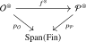
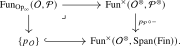
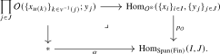
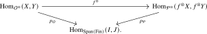
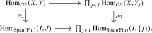
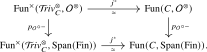
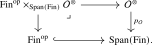

This section gives the working definition of an \(\infty \)-operad, introduces morphisms of \(\infty \)-operads, and records the first examples. We refine the preliminary definition from Definition 12.4.3: since cocartesian morphisms are now available to us (Definition 23.1.1), we may state its third condition directly rather than unwinding it into a pullback square as in Chapter 12.
Definition 14.1.1. An \(\infty \)-operad (or: \(\Span (\Fin )\)-\(\infty \)-operad) is a pair \(\Oo = (\Oo ^{\otimes },p_{\Oo })\) consisting of an \(\infty \)-category \(\Oo ^{\otimes }\) equipped with a functor \(p_{\Oo }\colon \Oo ^{\otimes } \to \Span (\Fin )\) satisfying the following conditions:
- (1)
-
The \(\infty \)-category \(\Oo ^{\otimes }\) admits finite products, and the functor \(p_{\Oo }\) preserves finite products;
- (2)
-
For every finite set \(I\), the product in \(\Oo ^{\otimes }\) defines an equivalence \[ \prod _{i \in I} \Oo ^{\otimes }_{\{i\}} \iso \Oo ^{\otimes }_I, \] where \(\Oo ^{\otimes }_I\) denotes the fiber of \(p_{\Oo }\) over the set \(I\);
- (3)
-
For a morphism \(f\colon J \to I\) in \(\Fin \) and objects \(X_i \in \Oo ^{\otimes }\), the map \(\widetilde {f}\colon \prod _{i\in I} X_i \to \prod _{j \in J} X_{f(j)}\) whose \(j\)-th component is the projection to \(X_{f(j)}\) is \(p_{\Oo }\)-cocartesian.
The objects \(X_i\) in condition (3) are not required to be colors; this more general form will be used in Proposition 14.1.9.
If \(\Pp = (\Pp ^{\otimes }, p_{\Pp })\) is another \(\infty \)-operad, then a morphism of \(\infty \)-operads \(f\colon \Oo \to \Pp \) is a commutative diagram

such that the functor \(f^{\otimes }\) preserves finite products.
If we write \(\Cat ^{\mathrm {prod}}_{\infty }\) for the (very large) \(\infty \)-category of \(\infty \)-categories that admit finite products and functors that preserve finite products, we obtain a full subcategory \[ \Op _{\infty } \quad \subseteq \quad (\Cat ^{\mathrm {prod}}_{\infty })_{/\Span (\Fin )} \] spanned by the \(\infty \)-operads. Given two \(\infty \)-operads \(\Oo \) and \(\Pp \), we will denote by \(\Fun _{\Op _{\infty }}(\Oo ,\Pp )\) the \(\infty \)-category of morphisms of \(\infty \)-operads from \(\Oo \) to \(\Pp \), defined as the following fiber:

In certain contexts, morphisms of \(\infty \)-operads \(\Oo \to \Pp \) are also known as \(\Oo \)-algebras in \(\Pp \), and a common alternative notation for the \(\infty \)-category \(\Fun _{\Op _{\infty }}(\Oo ,\Pp )\) is \(\Alg _{\Oo }(\Pp )\).
Observation 14.1.2. The \(\infty \)-category \(\Op _{\infty }\) admits finite products. The terminal object is \(\Comm \), and the product of \(\infty \)-operads \(\Oo \) and \(\Pp \) has total category \[ (\Oo \times \Pp )^{\otimes } = \Oo ^{\otimes }\times _{\Span (\Fin )}\Pp ^{\otimes }. \] Indeed, finite products, the decomposition of the fibers, and the required cocartesian lifts are all computed componentwise in this fiber product.
Warning 14.1.3. As mentioned in Remark 12.4.4, our definition of \(\infty \)-operads does not agree with the standard one in the literature, due to Lurie, which we will discuss in Section 17.4 below. However, the difference is mostly inconsequential for practical purposes, as most constructions with Lurie’s definition go through with our definition. The main difference is that with our definition we can state various conditions on the \(\infty \)-category \(\Oo ^{\otimes }\) in terms of finite products rather than via a Segal condition.
Terminology 14.1.4. We refer to the fiber \(\Oo _{\lra {1}} := p^{-1}_{\Oo }(\lra {1})\) over the 1-element set \(\lra {1} := \{1\}\) as the underlying \(\infty \)-category of the \(\infty \)-operad \(\Oo \). We denote its groupoid core by \[ \Oo ^{\simeq } \quad := \quad (\Oo _{\lra {1}})^{\simeq } \] and refer to it as the anima of colors of \(\Oo \). In the classical notation of Definition 12.2.1, \(\Oo ^{\simeq }\) denoted only the set of colors; here it also remembers the invertible unary morphisms between them. For a finite set \(I\), condition (2) guarantees that every object in \(\Oo ^{\otimes }_I\) may be uniquely written as a product \(\prod _{i \in I} x_i\) for some colors \(x_i \in \Oo ^{\simeq }\). In analogy with the classical case, we may also denote such a product as an unordered tuple \(\{x_i\}_{i \in I}\). Given another color \(y \in \Oo ^{\simeq }\), we define the anima of multimorphisms in \(\Oo \) from \(\{x_i\}_{i \in I}\) to \(y\) as the anima of morphisms in \(\Oo ^{\otimes }\) that map to the span \(I \xleftarrow {=} I \to \lra {1}\):
A morphism \(\phi \colon X \to Y\) in \(\Oo ^{\otimes }\) whose image in \(\Span (\Fin )\) is a forward map \(I \xleftarrow {=} I \xrightarrow {g} J\) is called an active morphism. We say \(\phi \) is an inert morphism if it is \(p_{\Oo }\)-cocartesian and its image in \(\Span (\Fin )\) is a backwards map \(I \xleftarrow {f} J \xrightarrow {=} J\). We want to think of the active morphisms as the ones that encode the operad structure, and of the inert morphisms as merely capturing the product structure in \(\Oo ^{\otimes }\).
Notation 14.1.5. Given a functor \(p_{\Oo }\colon \Oo ^{\otimes } \to \Span (\Fin )\) and a morphism \(\alpha \colon I \to J\) in \(\Span (\Fin )\), we write \[ \Hom _{\Oo ^{\otimes }}^{\alpha }(X,Y) \qquad := \qquad \fib _{\alpha }(\, p_{\Oo }\colon \Hom _{\Oo ^{\otimes }}(X,Y) \to \Hom _{\Span (\Fin )}(I,J) \, ) \] for all \(X,Y \in \Oo ^{\otimes }\) with \(p_{\Oo }(X) \cong I\) and \(p_{\Oo }(Y) \cong J\).
Lemma 14.1.6. Let \(\alpha \colon I \xleftarrow {u} K \xrightarrow {v} J\) be a span of finite sets, and let \(\{x_i\}_{i\in I}\) and \(\{y_j\}_{j\in J}\) be objects of \(\Oo ^{\otimes }\). Then there is a pullback square

The top map combines the multimorphisms into a morphism with source \(\{x_{u(k)}\}_{k\in K}\) and then precomposes with the projection-induced inert morphism from \(\{x_i\}_{i\in I}\). This square is natural in morphisms of \(\infty \)-operads.
Proof. Set \(X:=\{x_i\}_{i\in I}\), \(X_K:=\{x_{u(k)}\}_{k\in K}\) and \(Y:=\{y_j\}_{j\in J}\), and factor \(\alpha \) as the backwards span \(I\xleftarrow {u}K\xrightarrow {=}K\) followed by the active span \(\gamma \colon K\xleftarrow {=}K\xrightarrow {v}J\). By condition (3) of Definition 14.1.1, the projection-induced map \(X\to X_K\) is \(p_{\Oo }\)-cocartesian. Its universal property gives an equivalence \[ \Hom _{\Oo ^{\otimes }}^{\alpha }(X,Y) \simeq \Hom _{\Oo ^{\otimes }}^{\gamma }(X_K,Y). \] Since \(Y=\prod _{j\in J}y_j\) and \(p_{\Oo }\) preserves products, the right-hand side is equivalent to \[ \prod _{j\in J}\Hom _{\Oo ^{\otimes }}^{\rho _j\circ \gamma }(X_K,y_j), \] where \(\rho _j\colon J\hookleftarrow \{j\}\xrightarrow {=}\{j\}\) is the corresponding projection. The composite \(\rho _j\circ \gamma \) is represented by the span \(K\hookleftarrow v^{-1}(j)\to \{j\}\). A second application of condition (3), now to \(v^{-1}(j)\hookrightarrow K\), therefore identifies its \(j\)-th factor with \[ \Oo (\{x_{u(k)}\}_{k\in v^{-1}(j)};y_j). \] The resulting equivalence is induced by the top map in the displayed square, so that square is a pullback. Every map used in its construction is induced by products and their projections, and is therefore preserved by morphisms of \(\infty \)-operads. This proves naturality. □
Definition 14.1.7. A morphism of \(\infty \)-operads \(f\colon \Oo \to \Pp \) is called fully faithful if for every finite set \(I\) and every collection of colors \(\{x_i\}_{i \in I}\) and \(y\) of \(\Oo \), the induced map \[ \Oo (\{x_i\}_{i \in I}; y) \to \Pp (\{f(x_i)\}_{i \in I}; f(y)) \] is an equivalence of animae.
Lemma 14.1.8. Let \(f\colon \Oo \to \Pp \) be a morphism of \(\infty \)-operads. If \(f\) is fully faithful and the induced functor \(\Oo _{\lra {1}} \to \Pp _{\lra {1}}\) is essentially surjective, then \(f\) is an equivalence of \(\infty \)-operads.
Proof. For every finite set \(I\), the fiber \(\Oo ^{\otimes }_I\) is equivalent to \(\Oo _{\lra {1}}^I\), and similarly for \(\Pp \). Under these equivalences, the functor induced by \(f^{\otimes }\) is the product of \(I\) copies of the underlying functor of \(f\), so it is essentially surjective. Thus \(f^{\otimes }\) is essentially surjective on objects.
To prove full faithfulness, let \(X=\{x_i\}_{i\in I}\) and \(Y=\{y_j\}_{j\in J}\) be objects of \(\Oo ^{\otimes }\). There is a commutative triangle

For a span \(\alpha \colon I\xleftarrow {u}K\xrightarrow {v}J\), the naturality in Lemma 14.1.6 identifies the induced map on fibers over \(\alpha \) with \[ \prod _{j\in J}\Oo (\{x_{u(k)}\}_{k\in v^{-1}(j)};y_j) \longrightarrow \prod _{j\in J}\Pp (\{f(x_{u(k)})\}_{k\in v^{-1}(j)};f(y_j)). \] This is an equivalence because \(f\) is fully faithful. Hence the top map in the triangle is an equivalence, since it is a map of animae over a fixed base which is an equivalence on every fiber. Thus \(f^{\otimes }\) is fully faithful and essentially surjective, and hence an equivalence over \(\Span (\Fin )\). □
14.1.1 An alternative characterization of \(\infty \)-operads
Our definition of \(\infty \)-operads was formulated in terms of finite products in the total category \(\Oo ^{\otimes }\). We now discuss an alternative characterization which does not make any a priori assumptions on products in \(\Oo ^{\otimes }\) and instead uses a formulation in terms of cocartesian morphisms. This will be our main practical criterion for recognizing \(\infty \)-operads. It is used in the next section to produce the \(\infty \)-operad associated to a symmetric monoidal \(\infty \)-category, and in Section 17.4 to compare our definition of \(\infty \)-operads to Lurie’s definition.
Proposition 14.1.9. Consider a functor \(p_{\Oo }\colon \Oo ^{\otimes } \to \Span (\Fin )\). Then \((\Oo ^{\otimes }, p_{\Oo })\) is an \(\infty \)-operad if and only if the following conditions are satisfied:
- (i)
-
\(\Oo ^{\otimes }\) admits all \(p_{\Oo }\)-cocartesian lifts of backwards morphisms \(I \xleftarrow {f} J \xrightarrow {=} J\) in \(\Span (\Fin )\);
- (ii)
-
For every finite set \(I\), the functor \[ \Oo ^{\otimes }_I \to \prod _{i \in I} \Oo ^{\otimes }_{\{i\}} \] given by cocartesian transport along the maps \(\rho _i\colon I \hookleftarrow \{i\} \xrightarrow {=} \{i\}\) in \(\Span (\Fin )\) is an equivalence, where the transport functors are supplied by Proposition 23.1.4;
- (iii)
-
Consider an object \(Y \in \Oo ^{\otimes }\) with image \(J := p_{\Oo }(Y) \in \Span (\Fin )\) and cocartesian lifts \(Y \to Y_j\) over the maps \(\rho _j\) in \(\Span (\Fin )\). Then the maps \(Y \to Y_j\) exhibit \(Y\) as a product \(\prod _{j \in J} Y_j\) in \(\Oo ^{\otimes }\).
Proof. Throughout the proof we write \(p = p_{\Oo }\) for simplicity. First assume that \(\Oo ^{\otimes }\) is an \(\infty \)-operad. We show that (i)–(iii) are satisfied:
- (i)
-
Consider a morphism \(f\colon J \to I\) in \(\Fin \) and consider \(X \in \Oo ^{\otimes }_I\). By condition (2), we may uniquely write \(X\) as a product \(\prod _{i \in I} X_i\) of objects \(X_i \in \Oo ^{\otimes }_{\{i\}}\). We then define \(Y := \prod _{j \in J} X_{f(j)}\) and define \(\widetilde {f}\colon X \to Y\) to be the map whose \(j\)-th component \(X = \prod _{i \in I} X_i \to X_{f(j)}\) is the projection map onto \(X_{f(j)}\). Then assumption (3) tells us that \(\widetilde {f}\) is a \(p\)-cocartesian lift of the span \(I \xleftarrow {f} J \xrightarrow {=} J\).
- (iii)
-
Using (2), we may write the object \(Y \in \Oo ^{\otimes }_J\) uniquely as a product \(\prod _{j \in J} Y_j\). By assumption (3), the projection maps \(Y = \prod _{j \in J} Y_j \to Y_j\) are cocartesian lifts of the maps \(\rho _j\colon J \hookleftarrow \{j\} \xrightarrow {=} \{j\}\) in \(\Span (\Fin )\), verifying (iii).
- (ii)
-
To show that the map \(\Oo ^{\otimes }_I \to \prod _{i \in I} \Oo ^{\otimes }_{\{i\}}\) is an equivalence, it suffices to show it is a left-inverse to the product functor \(\prod _{i \in I} \Oo ^{\otimes }_{\{i\}} \iso \Oo ^{\otimes }_I\), as this was assumed to be an equivalence. This is again a consequence of the fact that the projection maps \(\prod _{i \in I} X_i \to X_i\) are cocartesian lifts of \(\rho _i\).
We now show that conditions (i)-(iii) imply that \(\Oo ^{\otimes }\) is an \(\infty \)-operad. We check conditions (1)-(3):
- (1)
-
For finite products in \(\Oo ^{\otimes }\), consider objects \(Y^1, \dots , Y^n\) in \(\Oo ^{\otimes }\) and set \(T_i := p(Y^i)\) and \(T := \bigsqcup _i T_i\). Picking cocartesian lifts \(Y^i \to Y^i_t\) over each map \(\rho _t\), condition (iii) tells us that these maps exhibit each \(Y^i\) as a product \(\prod _{t \in T_i} Y^i_t\). Using (ii), we may pick some object \(Y \in \Oo ^{\otimes }_T\) whose cocartesian transport along each \(\rho _t\) is \(Y^i_t\), and we similarly see that the maps \(Y \to Y^i_t\) exhibit \(Y\) as a product \(\prod _{i=1}^n \prod _{t \in T_i} Y^i_t\). Consequently \[ \Hom _{\Oo ^{\otimes }}(Z,Y) \simeq \prod _{i=1}^n\prod _{t\in T_i}\Hom _{\Oo ^{\otimes }}(Z,Y^i_t) \simeq \prod _{i=1}^n\Hom _{\Oo ^{\otimes }}(Z,Y^i) \] for every \(Z\in \Oo ^{\otimes }\), so \(Y \simeq \prod _{i=1}^n Y^i\). Thus \(\Oo ^{\otimes }\) admits finite products. It is also clear from this calculation that \(p \colon \Oo ^{\otimes } \to \Span (\Fin )\) preserves products.
- (2)
-
It will suffice to argue that the product functor \(\prod _{s \in S} \Oo ^{\otimes }_s \to \Oo ^{\otimes }_S\) is a right-inverse to the assumed equivalence \(\Oo ^{\otimes }_S \iso \prod _{s \in S} \Oo ^{\otimes }_{\{s\}}\) from (ii). But (iii) implies that for \(X_s \in \Oo ^{\otimes }_{\{s\}}\) the projection maps \(\prod _{s \in S} X_s \to X_s\) are the cocartesian lifts of the \(\rho _s\), which gives the claim.
- (3)
-
Consider a morphism \(f\colon J \to I\) and let \(X_i \in \Oo ^{\otimes }\). We have to show that the map \(\widetilde {f}\colon \prod _{i \in I} X_i \to \prod _{j \in J} X_{f(j)}\) is \(p\)-cocartesian.
Let us first prove the special case where \(p(X_i) = *\) for all \(i \in I\). Let \(\overline {f}\colon \prod _{i \in I} X_i \to Y\) be a cocartesian lift of \(f\). By the universal property of cocartesian lifts, there is a morphism \(Y \to \prod _{j \in J} X_{f(j)}\) which we wish to show is an equivalence. Note that this map lives in the fiber over \(J\), so by condition (2) it suffices to check this after applying cocartesian transport along each of the maps \(\rho _j\). Note that we have \((\rho _j)_!Y \simeq X_{f(j)}\) since the composites of the spans \[ I \xleftarrow {f} J \xrightarrow {=} J \qquadtext { and } \rho _j\colon J \hookleftarrow \{j\} \to * \] is the span \(\rho _{f(j)}\colon I \hookleftarrow \{f(j)\} \xrightarrow {=} \{f(j)\}\). The projections from \(\prod _{j \in J}X_{f(j)}\) are cocartesian lifts of the maps \(\rho _j\) by the construction of products in part (1), so also \((\rho _j)_!(\prod _{j \in J} X_{f(j)}) \simeq X_{f(j)}\). This proves the claim in the special case.
The general case is an immediate consequence by writing each \(X_i\) as a product \(\prod _{t \in T_i} X^t_i\) and applying the previous argument to \(\prod _{i \in I} \prod _{t \in T_i} X^t_i\). □
It is sometimes convenient to use the notation from Notation 14.1.5 to give the following alternative formulation of part (iii).
Lemma 14.1.10. Given a functor \(p_{\Oo }\colon \Oo ^{\otimes } \to \Span (\Fin )\) and cocartesian morphisms \(Y \to Y_j\) over the maps \(\rho _j\), these maps exhibit \(Y\) as a product of the \(Y_j\) in \(\Oo ^{\otimes }\) if and only if for every \(X \in \Oo ^{\otimes }_I\) and every \(\alpha \in \Hom _{\Span (\Fin )}(I,J)\) they induce an equivalence \[ \Hom _{\Oo ^{\otimes }}^{\alpha }(X,Y) \to \prod _{j \in J} \Hom _{\Oo ^{\otimes }}^{\rho _j \circ \alpha }(X,Y_j). \]
Proof. The maps \(Y \to Y_j\) exhibit \(Y\) as a product if and only if for every \(X \in \Oo ^{\otimes }_I\) the top map in the following square is an equivalence:

Since the bottom map is an equivalence, this is equivalent to the square being a pullback square, which is in turn equivalent to the condition that the top map induces isomorphisms on all fibers over \(\alpha \in \Hom _{\Span (\Fin )}(I,J)\). □
Corollary 14.1.11. If \(\Oo \) is an \(\infty \)-operad, then the inert morphisms in \(\Oo ^{\otimes }\) are precisely the morphisms of the form \(\widetilde {f}\colon \prod _{i \in I} x_i \to \prod _{j \in J} x_{f(j)}\) for maps \(f\colon J \to I\) in \(\Fin \) and colors \(x_i \in \Oo ^{\simeq }\).
Similarly, if \(\Pp \) is another \(\infty \)-operad, and \(\phi ^{\otimes }\colon \Oo ^{\otimes } \to \Pp ^{\otimes }\) is a functor over \(\Span (\Fin )\), then \(\phi ^{\otimes }\) preserves finite products (i.e., corresponds to a morphism \(\phi \colon \Oo \to \Pp \) of \(\infty \)-operads) if and only if it preserves the inert morphisms.
Proof. By assumption \(\widetilde {f}\) is inert for every \(f\). Conversely, we saw in the proof of (i) of the previous proposition that for every backwards span \(I \xleftarrow {\smash {f}} J \xrightarrow {=} J\) and every \(X \in \Oo ^{\otimes }_I\) the map \(\widetilde {f} \colon X \simeq \prod _{i \in I} X_i \to \prod _{j \in J} X_{f(j)}\) is a cocartesian lift of \(f\) starting in \(X\), so by uniqueness it follows that every cocartesian lift is of this form.
If \(\phi ^{\otimes }\) preserves finite products, it in particular preserves the maps \(\widetilde {f}\colon \prod _{i \in I} X_i \to \prod _{j \in J} X_{f(j)}\), hence all inert morphisms. Conversely, if \(\phi ^{\otimes }\) preserves inert morphisms, it preserves the projection maps \(Y \to Y_j\) for \(Y \in \Oo ^{\otimes }_J\) exhibiting \(Y\) as a product of the \(Y_j\), hence it preserves every nonempty finite product. It also preserves the terminal object: since \(\phi ^{\otimes }\) lies over \(\Span (\Fin )\), it carries the unique object of \(\Oo ^{\otimes }_{\emptyset }\simeq *\) to the unique object of \(\Pp ^{\otimes }_{\emptyset }\simeq *\). □
Remark 14.1.12. Let \(\Oo = (\Oo ^{\otimes },p_{\Oo })\) be an \(\infty \)-operad. Then every morphism \(\phi \colon X \to Z\) in \(\Oo ^{\otimes }\) factors uniquely as \[ X \xrightarrow {\widetilde {f}} Y \xrightarrow {\psi } Z, \] where \(\widetilde {f}\) is an inert morphism and \(\psi \) is an active morphism. To see this, let us denote by \(I \xleftarrow {f} K \xrightarrow {g} J\) the image of \(\phi \) under \(p\). This span may be factored uniquely as a composite of a backwards span \(I \xleftarrow {f} K \xrightarrow {=} K\) followed by a forward span \(K \xleftarrow {=} K \xrightarrow {g} J\). We then let \(\widetilde {f}\colon X \to Y\) be the unique cocartesian lift of \(f\) with domain \(X\). It follows that there is a unique morphism \(\psi \colon Y \to Z\) over \(g\) such that \(\psi \circ \widetilde {f} = \phi \).
The argument above produces a factorization and shows that any two of them are isomorphic. With more care, it in fact shows that the factorization is unique, in the sense that the anima of factorizations of \(\phi \) is contractible. Rather than spelling this out by hand, we will obtain it in Section 17.1 from the general theory of factorization systems on an \(\infty \)-category, where we show that the inert and active morphisms define such a system on \(\Oo ^{\otimes }\).
14.1.2 Examples of \(\infty \)-operads
The examples of \(\infty \)-operads that we can write down directly at this point are of a rather simple nature; the more interesting ones require the constructions developed in the remainder of this part.
Example 14.1.13. The commutative \(\infty \)-operad \(\Comm \) is given by \(\Comm ^{\otimes } = \Span (\Fin )\) and \(p_{\Comm } = \id \colon \Span (\Fin ) \to \Span (\Fin )\). This is the terminal \(\infty \)-operad.
Example 14.1.14. The \(\infty \)-operad \(\Ee _0\) of pointed objects is given by \[ \Ee _0^{\otimes } := \Span _{\all ,\inj }(\Fin ) \qquadtext { and } p_{\Ee _0} = \incl \colon \Span _{\all ,\inj }(\Fin ) \hookrightarrow \Span (\Fin ). \] The active maps in \(\Ee _0\) are the injections \(I \hookrightarrow J\) of finite sets. The finite-product conditions in the definition of an \(\infty \)-operad follow from part (1) of Lemma 13.3.8; the fibers of \(p_{\Ee _0}\) are contractible, and the backwards spans remain cocartesian under the inclusion into \(\Span (\Fin )\).
Example 14.1.15. By Corollary 17.4.10, the classical associative operad determines the associative \(\infty \)-operad \(\Assoc \). The topological little \(n\)-cubes operad of Example 12.1.7 similarly determines an \(\infty \)-operad \(\Ee _n\); see [Lurie (2017), Section 5.1.0] for the construction. For \(n=1\), the operad morphism \(\Ee _1\to \Assoc \) described after Example 12.1.7 is an equivalence of \(\infty \)-operads by [Lurie (2017), Example 5.1.0.7].
14.1.3 Trivial operads
The simplest \(\infty \)-operads are those without any operations beyond the unary ones, generalizing the trivial colored operads of Example 12.2.6. Given an \(\infty \)-category \(C\), we will construct an \(\infty \)-operad \(\Triv _C\) with underlying \(\infty \)-category \(C\) and multimorphism animae \[ \Triv _C(\{x_i\}_{i \in I};y) \quad \simeq \quad \begin {cases} \Hom _C(x_{i_0},y) & \text {if } I = \{i_0\} \text { is a singleton;} \\ \emptyset & \text {otherwise,} \end {cases} \] with composition given by composition in \(C\). There is no operadic structure left to specify: operations of arity \(\neq 1\) do not exist, and the unary operations are simply the morphisms of \(C\). To construct \(\Triv _C\), note that multimorphisms from \(\{x_i\}_{i \in I}\) to \(y\) live over the active span \(I \xleftarrow {=} I \to \lra {1}\), which lies in the subcategory \(\Fin \catop \subseteq \Span (\Fin )\) precisely when \(I\) is a singleton. We should therefore look for an \(\infty \)-operad whose structure map factors through the inclusion \(\Fin \catop \hookrightarrow \Span (\Fin )\).
The construction is based on the following \(\infty \)-category of finite families, which will reappear in Section 15.2 as the basis for cocartesian monoidal structures.
Construction 14.1.16 (Finite families). Let \(C\) be an \(\infty \)-category. There is a unique finite-product-preserving functor \[ C^{(-)}\colon \Fin \catop \to \Cat _{\infty } \] which sends the one-point set to \(C\); explicitly, it sends a finite set \(I\) to the \(\infty \)-category \(C^I\) of \(I\)-indexed families and a map \(f\colon I \to J\) to the restriction functor \(f^*\colon C^J \to C^I\). Equivalently, this functor is the right Kan extension of \(C\) from the one-point set. We write \[ q\colon \Fin (C) \to \Fin \] for its cartesian unstraightening. Thus objects of \(\Fin (C)\) are finite unordered tuples \(\{x_i\}_{i \in I}\), while morphisms \(\{x_i\}_{i \in I} \to \{y_j\}_{j \in J}\) are pairs \((f,(\phi _i)_{i \in I})\) consisting of a map \(f\colon I \to J\) and morphisms \(\phi _i\colon x_i \to y_{f(i)}\) in \(C\) for all \(i \in I\).
We record the following basic observations about the \(\infty \)-category of finite families:
- The fiber of \(q\) over \(\lra {1}\) is equivalent to \(C\), and the resulting inclusion \(i\colon C \hookrightarrow \Fin (C)\) is fully faithful.
- A morphism \((f,(\phi _i)_{i \in I})\colon \{x_i\}_{i \in I} \to \{y_j\}_{j \in J}\) is \(q\)-cartesian if and only if each \(\phi _i\) is an isomorphism in \(C\). We denote by \[ \Fin (C)_{\ct } \subseteq \Fin (C) \] the wide subcategory spanned by the \(q\)-cartesian morphisms.
- The \(\infty \)-category \(\Fin (C)\) admits finite coproducts, given by concatenation of unordered tuples, and the functor \(q\colon \Fin (C) \to \Fin \) preserves finite coproducts. More precisely, given a finite collection of objects \(X_a \in \Fin (C)\) for \(a \in A\), we may uniquely write each \(X_a\) as \(\{x^a_j\}_{j \in J_a}\) for some finite set \(J_a\), and then the coproduct is given by \(X = \{x^a_j\}_{(a,j) \in \bigsqcup _{a \in A} J_a}\), with the maps \(X_a \to X\) given by the \(q\)-cartesian morphisms over the inclusions \(J_a \hookrightarrow \bigsqcup _{a \in A} J_a\). This follows from Proposition 23.2.10.
Together with the fully faithful inclusion \(i\), these coproducts exhibit \(\Fin (C)\) as the free finite-coproduct completion of \(C\):
Lemma 14.1.17. Let \(C\) be an \(\infty \)-category. For every \(\infty \)-category \(D\) with finite coproducts, restriction along the fully faithful inclusion \(i\colon C \hookrightarrow \Fin (C)\) induces an equivalence \[ i^*\colon \Fun ^{\amalg }(\Fin (C),D) \iso \Fun (C,D), \] where \(\Fun ^{\amalg }(-,-)\) denotes the full subcategory of functors preserving finite coproducts.
Proof. We claim that an inverse is given by left Kan extension.
Step 1: Given a functor \(F\colon C \to D\), we show that its left Kan extension \(i_!F\) along \(i\) exists. By the pointwise formula for left Kan extensions, it suffices to show that each of the colimits \[ (i_!F)(x_1, \dots , x_n) = \colim _{y \in C_{/(x_1, \dots , x_n)}} F(y) \] exists. Observe that the canonical map \[ \bigsqcup _{k=1}^n C_{/x_k} \to C_{/(x_1, \dots , x_n)} := C \times _{\Fin (C)} \Fin (C)_{/(x_1, \dots , x_n)} \] sending \((\phi \colon y \to x_k)\) to the map \((\{k\} \hookrightarrow \lra {n}, \phi )\) is an equivalence. Since \(D\) has finite coproducts, we see that colimits indexed by the slices \(C_{/(x_1, \dots , x_n)}\) exist in \(D\) if and only if colimits indexed by each \(C_{/x_k}\) exist. But the latter is clear: as \(C_{/x_k}\) admits a terminal object, colimits always exist and are given by evaluation at that terminal object. This shows that \(i_!F\) exists and that it is given on objects by \[ (i_!F)(x_1, \dots , x_n) = F(x_1) \sqcup \dots \sqcup F(x_n). \]
Step 2: It follows from the pointwise description of \(i_!F\) that it preserves finite coproducts. In particular, the restriction functor thus admits a left adjoint \[ i_!\colon \Fun (C,D) \to \Fun ^{\amalg }(\Fin (C),D). \]
Step 3: We now show that the unit \(\id \to i^*i_!\) and counit \(i_!i^* \to \id \) are natural isomorphisms. The unit is a natural isomorphism because \(i\) is fully faithful. If \(G\colon \Fin (C)\to D\) preserves finite coproducts, then the counit evaluated at \((x_1,\dots ,x_n)\) is the canonical map \[ G(x_1)\sqcup \dots \sqcup G(x_n) \longrightarrow G(x_1,\dots ,x_n), \] which is an isomorphism because \((x_1,\dots ,x_n)\) is the coproduct of the singleton families \((x_i)\) in \(\Fin (C)\). □
Construction 14.1.18 (Trivial operads). Let \(C\) be an \(\infty \)-category. Applying Construction 14.1.16 to \(C\catop \) gives a cartesian fibration \(q\colon \Fin (C\catop ) \to \Fin \); passing to opposite \(\infty \)-categories, we obtain a functor \(q\catop \colon \Fin (C\catop )\catop \to \Fin \catop \). We define \[ \Triv _{C}^{\otimes } := \Fin (C\catop )\catop , \qquad \qquad p_{\Triv _C}\colon \Fin (C\catop )\catop \xrightarrow {q\catop } \Fin \catop \hookrightarrow \Span (\Fin ), \] and refer to \(\Triv _C\) as the trivial \(\infty \)-operad generated by \(C\). Unwinding Construction 14.1.16, the objects of \(\Triv _C^{\otimes }\) are finite unordered tuples \(\{x_i\}_{i \in I}\) of objects of \(C\), while a morphism \(\{x_i\}_{i \in I} \to \{y_j\}_{j \in J}\) lying over the backwards span \(I \xleftarrow {g} J \xrightarrow {=} J\) is a collection of morphisms \(x_{g(j)} \to y_j\) in \(C\). The opposite in the definition ensures that the underlying \(\infty \)-category is \(C\) itself, and not \(C\catop \).
Remark 14.1.19. Equivalently, \(q\catop \colon \Triv _C^{\otimes } \to \Fin \catop \) is the cocartesian unstraightening of the functor \(C^{(-)}\) from Construction 14.1.16: it is a cocartesian fibration and its cocartesian straightening \(\Fin \catop \to \Cat _{\infty }\) preserves finite products and sends the point to \(C\).
Lemma 14.1.20. Let \(C\) be an \(\infty \)-category. Then \(\Triv _C\) is an \(\infty \)-operad with underlying \(\infty \)-category \((\Triv _C)_{\lra {1}} \simeq C\), and its multimorphism animae are the ones described at the beginning of this subsection. Moreover, for every \(\infty \)-operad \(\Oo \), restriction to the underlying \(\infty \)-categories induces an equivalence \[ \Fun _{\Op _{\infty }}(\Triv _C,\Oo ) \iso \Fun (C,\Oo _{\lra {1}}). \]
Proof. Let us first check that \(\Triv _C\) is an \(\infty \)-operad. By Construction 14.1.16, the \(\infty \)-category \(\Fin (C\catop )\) admits finite coproducts and \(q\) preserves them, so \(\Triv _C^{\otimes } = \Fin (C\catop )\catop \) admits finite products and \(q\catop \) preserves them; as the inclusion \(\Fin \catop \hookrightarrow \Span (\Fin )\) preserves finite products by part (1) of Lemma 13.3.8, the same is true for \(p_{\Triv _C}\). Since the products of \(\Triv _C^{\otimes }\) are the concatenations of tuples, the fiber over a finite set \(I\) is \(C^I\), whose decomposition \(C^I \simeq \prod _{i \in I}C\) is the one required in the definition of an \(\infty \)-operad.
For the final condition, consider objects \(X_i = \{x^i_a\}_{a \in A_i}\) of \(\Triv _C^{\otimes }\) for \(i \in I\) and a map \(f\colon J \to I\) of finite sets. Read in \(\Fin (C\catop )\), the morphism \(\widetilde {f}\colon \prod _{i \in I}X_i \to \prod _{j \in J}X_{f(j)}\) is the map \(\coprod _{j \in J}X_{f(j)} \to \coprod _{i \in I}X_i\) which restricts on the \(j\)-th summand to the inclusion of \(X_{f(j)}\); it lies over the map \(\bigsqcup _{j \in J}A_{f(j)} \to \bigsqcup _{i \in I}A_i\), \((j,a) \mapsto (f(j),a)\), and all of its components in \(C\catop \) are identities. It is therefore \(q\)-cartesian, and hence \(\widetilde {f}\) is \(q\catop \)-cocartesian. It remains \(p_{\Triv _C}\)-cocartesian after composing with the inclusion \(\Fin \catop \hookrightarrow \Span (\Fin )\): every morphism of \(\Triv _C^{\otimes }\) lies over a backwards span, and composing a non-backwards span with a backwards span is again non-backwards, so the mapping animae over the remaining spans are empty on both sides.
The description of the multimorphism animae follows: the active span \(I \xleftarrow {=} I \to \lra {1}\) lies in \(\Fin \catop \) only when \(I\) is a singleton, in which case it is the identity of \(\lra {1}\). Thus \(\Triv _C(\{x_i\}_{i \in I};y)\) is empty unless \(I = \{i_0\}\), in which case it is the anima of morphisms \(x_{i_0} \to y\) in the fiber \((\Triv _C)_{\lra {1}} \simeq C\).
We turn to the universal property, which will follow from the universal property of \(\Fin (C\catop )\). Indeed, applying Lemma 14.1.17 to \(C\catop \) and passing to opposite categories, we see that restriction along the inclusion \(j\colon C \hookrightarrow \Triv _C^{\otimes }\) of the fiber over \(\lra {1}\) induces an equivalence \[ j^*\colon \Fun ^{\times }(\Triv _C^{\otimes },E) \iso \Fun (C,E) \] for every \(\infty \)-category \(E\) that admits finite products. This equivalence is natural in \(E\), so applying it to \(E = \Oo ^{\otimes }\) and to \(E = \Span (\Fin )\) yields a commutative square

The composite \(p_{\Triv _C} \circ j\) is the constant functor at \(\lra {1}\), so passing to the fibers over \(p_{\Triv _C}\) and \(\const _{\lra {1}}\) gives equivalences \[ \Fun _{\Op _{\infty }}(\Triv _C,\Oo ) \iso \Fun (C,\Oo ^{\otimes })\times _{\Fun (C,\Span (\Fin ))}\{\const _{\lra {1}}\} \simeq \Fun (C,\Oo _{\lra {1}}), \] where the second equivalence holds because \(\Fun (C,-)\) preserves pullbacks. By construction, this equivalence is given by restriction to the underlying \(\infty \)-categories. □
Note that the construction \(C \mapsto \Triv _C\) is functorial in \(C\) and thus defines a functor \(\Triv _{(-)}\colon \Cat _{\infty } \to \Op _{\infty }\). It may be characterized as follows:
Corollary 14.1.21. The functor \(\Triv _{(-)}\colon \Cat _{\infty } \to \Op _{\infty }\) is left adjoint to the functor \[ (-)_{\lra {1}}\colon \Op _{\infty } \to \Cat _{\infty }, \qquad \Oo \mapsto \Oo _{\lra {1}}, \] and it is fully faithful.
Proof. The equivalence of Lemma 14.1.20 is given by passing to underlying \(\infty \)-categories and precomposing with the isomorphism \(C \iso (\Triv _C)_{\lra {1}}\), and is thus natural in both variables. Passing to groupoid cores yields the corresponding equivalence of mapping animae, so it exhibits \(\Triv _{(-)}\) as a left adjoint of \((-)_{\lra {1}}\). Taking \(\Oo = \Triv _D\) for an \(\infty \)-category \(D\), the equivalence \[ \Fun _{\Op _{\infty }}(\Triv _C,\Triv _D) \iso \Fun (C,(\Triv _D)_{\lra {1}}) \simeq \Fun (C,D) \] is inverse to the map induced by \(\Triv _{(-)}\), which is therefore fully faithful. □
Example 14.1.22. Taking \(C = *\) recovers the trivial \(\infty \)-operad \[ \Triv := \Triv _*, \qquad \Triv ^{\otimes } = \Fin \catop , \qquad p_{\Triv } = \incl \colon \Fin \catop \hookrightarrow \Span (\Fin ). \] Taking \(C = \emptyset \) gives the empty \(\infty \)-operad \(\Triv _{\emptyset }\), with \(\Triv _{\emptyset }^{\otimes } = *\) and \(p_{\Triv _{\emptyset }}\colon * \xhookrightarrow {\lra {0}} \Span (\Fin )\) the inclusion of the empty set \(\lra {0}\). Since \(\Triv _{(-)}\) is a left adjoint by Corollary 14.1.21, it preserves initial objects; as \(\emptyset \) is initial in \(\Cat _{\infty }\), we conclude that \(\Triv _{\emptyset }\) is the initial \(\infty \)-operad.
Lemma 14.1.23. For every \(\infty \)-operad \(\Oo \), there is a canonical equivalence \[ \Triv \times \Oo \simeq \Triv _{\Oo _{\lra {1}}} \] of \(\infty \)-operads.
Proof. Recall that \(\Triv ^{\otimes } = \Fin \catop \) and that \(p_{\Triv }\colon \Fin \catop \hookrightarrow \Span (\Fin )\) is the inclusion. The product operad \(\Triv \times \Oo \) is therefore represented by the pullback

By the defining properties of an \(\infty \)-operad, the left vertical map is a cocartesian fibration whose cocartesian straightening preserves finite products and sends \(\lra {1}\) to \(\Oo _{\lra {1}}\). It is therefore equivalent to \[ \Fin \catop \to \Cat _{\infty }, \qquad I \mapsto \Oo _{\lra {1}}^I. \] By Remark 14.1.19, its cocartesian unstraightening is precisely \[ q_{\Oo _{\lra {1}}}\catop \colon \Fin (\Oo _{\lra {1}}\catop )\catop \to \Fin \catop , \] which is the total category of \(\Triv _{\Oo _{\lra {1}}}\). □
Remark 14.1.24. More generally, restricting an arbitrary \(\infty \)-operad \(\Oo \) to the subcategory \(\Fin \catop \subseteq \Span (\Fin )\) discards precisely the operations of arity \(\neq 1\): by Lemma 14.1.23, the pullback \(\Oo ^{\otimes } \times _{\Span (\Fin )} \Fin \catop \) is the total category of \(\Triv _{\Oo _{\lra {1}}}\). The resulting projection \(\Triv _{\Oo _{\lra {1}}} \to \Oo \) induces the identity on underlying \(\infty \)-categories, and is thus the counit of the adjunction of Corollary 14.1.21.
Generated from the authoritative LaTeX source.